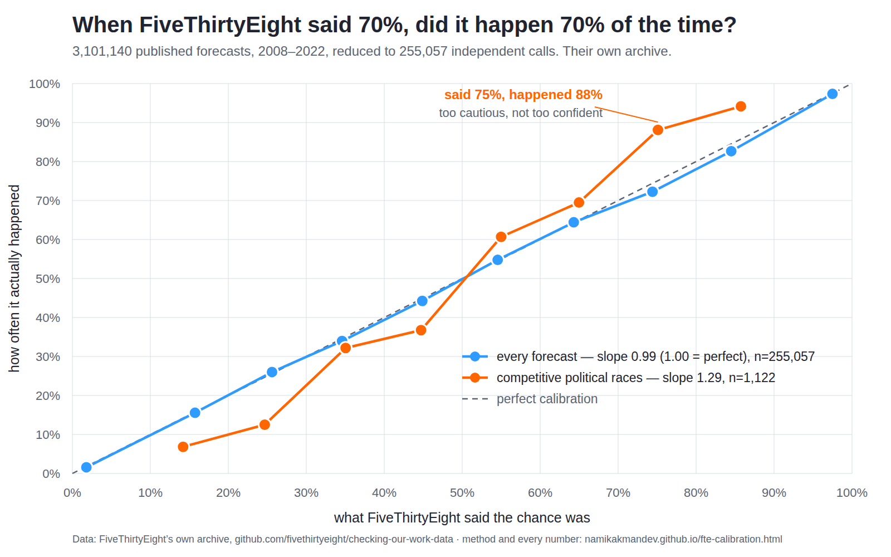

FiveThirtyEight, tested
FiveThirtyEight spent seventeen years publishing probabilities, and then published the scorecard too — every forecast they made, with the outcome attached, so anyone could check them. ABC News shut the site down in March 2025 and took it offline. The archive on GitHub survived. This page tests their central claim against it — 3,101,140 published probabilities from 2008 to 2022, reduced to 255,057 independent calls — and publishes every number, the method, its limitations, and scripts that reproduce the whole thing deterministically. The verdict: the claim holds. And on the races people actually argued about, 538 erred in the opposite direction from the one they are accused of — they were too cautious, not too confident.

What 538 said would happen, against how often it did. The dashed line is
perfect calibration. Blue is every forecast; orange is the competitive political
races — the ones that were genuinely in doubt — which sit above the line.
Regenerate with python3 scripts/fte_chart.py.
1
The claim is true
Across 255,057 independent calls the fitted calibration slope is 0.990 (95% CI 0.982–0.997, where 1.00 is perfect) with an intercept of +0.002. Every ten-point band lands within about two points of where it should. When 538 said 70%, it happened roughly 70% of the time.
2
“It said 71% and it was wrong” is not a criticism
Of the political forecasts in the 65–75% band, the favourite lost 21% of the time. A calibrated forecaster is supposed to lose about 30% of those. But calibration alone is a low bar — always saying the base rate is perfectly calibrated and useless. The skill score is the real defence: +19.1% over that do-nothing baseline overall.
3
They were underconfident
82% of 538's political forecasts were never in doubt — safe House seats at 1% or 99%. Keep only the 1,122 calls between 10% and 90% and the slope is 1.29 (CI 1.20–1.38). Above one, not below: their favourites won more often than they said.
The numbers
Calibration slope is the coefficient from regressing the 0/1 outcome on the published probability: 1.00 is perfect, below 1 is overconfidence, above 1 is underconfidence. Intervals are cluster-robust, treating one contest as one observation. Skill is the Brier skill score against a forecaster who always predicts the base rate.
| Slice | Slope | 95% CI | Brier | Skill | Forecasts | Contests |
|---|---|---|---|---|---|---|
| All forecasts | 0.990 | 0.982–0.997 | 0.1843 | +19.1% | 255,057 | 86,063 |
| Politics, all | 1.026 | 1.019–1.032 | 0.0288 | +87.9% | 6,303 | 2,492 |
| Politics, competitive (10–90%) | 1.292 | 1.201–1.383 | 0.1459 | +41.6% | 1,122 | 557 |
| Sports, all | 0.985 | 0.977–0.993 | 0.1883 | +17.2% | 248,754 | 83,571 |
| Sports, competitive (10–90%) | 0.976 | 0.963–0.989 | 0.2103 | +10.9% | 220,224 | 82,649 |
Band by band, all forecasts. The gap column is how far the world fell from the forecast — positive means it happened more often than 538 said.
| Forecast band | Forecasts | Mean forecast | Happened | Gap |
|---|---|---|---|---|
| 0–10% | 29,046 | 1.8% | 1.6% | −0.2 |
| 10–20% | 20,234 | 15.7% | 15.6% | −0.2 |
| 20–30% | 70,067 | 25.6% | 26.0% | +0.4 |
| 30–40% | 40,683 | 34.6% | 34.0% | −0.6 |
| 40–50% | 37,019 | 44.9% | 44.2% | −0.6 |
| 50–60% | 27,804 | 54.5% | 54.8% | +0.2 |
| 60–70% | 14,963 | 64.3% | 64.4% | +0.1 |
| 70–80% | 6,516 | 74.4% | 72.2% | −2.2 |
| 80–90% | 4,060 | 84.5% | 82.7% | −1.8 |
| 90–100% | 4,665 | 97.5% | 97.3% | −0.1 |
The same table for politics alone shows where the underconfidence lives. Note how thin the middle is: 5,181 of 6,303 political forecasts sit in the top and bottom bands.
| Forecast band | Forecasts | Mean forecast | Happened | Gap |
|---|---|---|---|---|
| 0–10% | 3,240 | 0.7% | 0.3% | −0.4 |
| 10–20% | 205 | 14.2% | 6.8% | −7.4 |
| 20–30% | 136 | 24.7% | 12.5% | −12.2 |
| 30–40% | 115 | 35.0% | 32.2% | −2.8 |
| 40–50% | 117 | 44.7% | 36.8% | −7.9 |
| 50–60% | 117 | 55.0% | 60.7% | +5.7 |
| 60–70% | 118 | 65.0% | 69.5% | +4.5 |
| 70–80% | 126 | 75.1% | 88.1% | +13.0 |
| 80–90% | 188 | 85.8% | 94.2% | +8.4 |
| 90–100% | 1,941 | 99.0% | 99.6% | +0.6 |
Underdogs below 50% lost more often than forecast, favourites above 50% won more often than forecast. That is one pattern, not two: the probabilities were pulled too far toward the middle.
Method
The archive holds one row per published probability. Rows are not observations, and three things had to be removed before any of them could be counted:
- Repeat forecasts. Most models re-ran daily, so a single House race contributes around a hundred rows. Pooling them turns a few hundred elections into n = 855,178. One snapshot per forecasting unit is kept — the final published forecast — taking 3,101,140 rows down to 261,779.
- In-play forecasts. 429,953 rows are live win probabilities updated during the event. A team thirty points up with two minutes left is a 99.9% call that any model gets right, and they flatter every statistic here. Excluded.
- Model variants. The same race was forecast by Lite, Classic and Deluxe. Counting all three triples the sample without adding information. One flagship model per project-year is kept, leaving 255,057 forecasts.
Calibration is then the slope of a regression of outcome on forecast:
outcomei = a + b · probabilityi → perfect is a = 0, b = 1
Intervals are cluster-robust, with a contest as the cluster: the two candidates in a race are one observation, not two, because one wins exactly when the other loses. Where the cluster count is small enough to make it practical, a 2,000-iteration cluster bootstrap (seed 42) is reported alongside and agrees to the third decimal.
Competitive means a published probability between 10% and 90%. That conditions on the forecast, never on the outcome — it is a question about which calls were hard, asked without any knowledge of how they turned out.
Limitations
- The famous number is not in here. The archive covers state-level presidential, Senate, House, governor and primary forecasts. It does not contain the national 2016 presidential forecast, so nothing on this page tests the 71% everyone argues about. The claim tested is the general one 538 made about their whole record.
- The political sample is small, and clustering does not reveal it. 6,303 political forecasts sit across 2,492 races on 48 election dates. Clustering does not widen the interval here — it slightly narrows it, because residuals inside a race cancel by construction. That is a property of the estimator, not evidence of a large sample. The honest statement is that the political result rests on roughly a dozen election cycles.
- Underconfidence is measured on 1,122 forecasts. It holds in every project (slopes 1.17 to 1.34) and in seven of eight cycles — but each cycle alone is thin, and 2016 runs the other way (slope 0.82, CI 0.15–1.49, 30 races), too wide to distinguish from either 1.00 or the pooled 1.29.
- Final forecasts are the easiest ones. Taking each model's last published call gives it every poll and every injury report. Re-run on the snapshot closest to 30 days out, across the 1,818 contests carrying both, the slope is identical to three decimals (1.032 either way) and skill falls only from +87.0% to +85.5% — but the matched subsample is small and politics-heavy.
- Sports dominate the pooled number. 248,754 of 255,057 forecasts are sports, and 162,260 are club soccer matches alone. Dropping club soccer moves the overall slope from 0.990 to 0.998. The pooled headline is really a statement about sports forecasting with politics along for the ride, which is why both are always broken out.
- Calibration is not accuracy, and neither is skill. A skill score of +19.1% says the forecasts beat a base-rate baseline, not that they beat a bookmaker, a market, or a rival model. No comparison to any competing forecaster is made here, because the archive does not contain one.
- Selection into the archive. 538 chose which projects to publish scorecards for. These are the forecasts they were willing to be graded on. That is far more than almost any other outlet published, and it is still their selection, not a census of everything they ever said.
- Ties are dropped. Sixteen rows code an outcome of 0.5 (drawn matches). They are not binary events and are excluded.
The scripts, in full
Nothing is elided. These are the three files that produced every number and the chart on this page, exactly as they run.
fetch_538.py — building the dataset from 538's archive (262 lines)
#!/usr/bin/env python3
"""Build the FiveThirtyEight forecast-calibration dataset from 538's own archive.
Source: github.com/fivethirtyeight/checking-our-work-data — the data behind
"How Good Are FiveThirtyEight Forecasts?". ABC shut the site down in March 2025
and pulled it offline; the GitHub archive survived. raw_forecasts.zip holds
3.1M rows: one published probability plus the outcome that followed.
Raw rows are NOT independent observations. 538 re-ran most forecasts daily, so
one House race contributes ~100 rows; and every event lists every outcome, so
Trump and Biden are two mechanically-linked rows for the same race. Pooling them
gives a calibration curve on n=3.1M that is really a few hundred elections and a
few tens of thousands of games.
This script reduces the archive to what an honest test needs and commits that:
data/fte-forecasts.json one row per (event, entity, field, model), at two
snapshots — the final forecast and the forecast
closest to 30 days out — tagged with the contest it
belongs to, so the analysis can bootstrap over
clusters at whichever level it wants to defend.
data/fte-slices.json sufficient statistics for the slices deliberately
excluded (live in-play forecasts, every-forecast-date
pooling), so the robustness table is reproducible
without re-downloading 350MB.
Usage: python3 scripts/fetch_538.py [--cache DIR]
"""
import argparse, csv, io, json, os, sys, urllib.request, zipfile
from collections import defaultdict
from datetime import date, datetime
REPO = "https://raw.githubusercontent.com/fivethirtyeight/checking-our-work-data/master"
ZIP_URL = f"{REPO}/raw_forecasts.zip"
LEAD_TARGET = 30 # days before the event for the second snapshot
BUCKETS = 20 # calibration bins, 5 percentage points wide
csv.field_size_limit(10 ** 8)
def fetch_zip(cache_dir):
"""Download raw_forecasts.zip once, reuse it on later runs."""
os.makedirs(cache_dir, exist_ok=True)
path = os.path.join(cache_dir, "raw_forecasts.zip")
if os.path.exists(path) and os.path.getsize(path) > 10_000_000:
print(f" cache hit: {path} ({os.path.getsize(path):,} bytes)")
return path
print(f" downloading {ZIP_URL} ...")
with urllib.request.urlopen(ZIP_URL, timeout=600) as r, open(path, "wb") as fh:
fh.write(r.read())
print(f" saved {os.path.getsize(path):,} bytes")
return path
def parse_date(s):
try:
return datetime.strptime(s, "%Y-%m-%d").date()
except (ValueError, TypeError):
return None
def contest_key(event, entity, field, event_date):
"""The set of rows whose outcomes are mechanically linked.
538's schema is not uniform across projects. A House race puts the race in
`event` and the candidates in `entity`; an NBA game leaves `event` empty and
puts the matchup in `entity`, split into prob1/prob2/probtie. Both are one
contest whose probabilities sum to one and whose outcomes cannot both
happen, which is the thing a cluster bootstrap must not break apart.
"""
if field in ("prob1", "prob2", "probtie"): # head-to-head fixture
return f"{event}|{entity}|{event_date}"
return f"{event}|{field}|{event_date}" # race, or season-long outcome
def is_live(project, forecast_type):
"""In-play forecasts: updated during the event itself.
A team 30 points up with two minutes left is a 99.9% call that any model
gets right. They are 430k of the 3.1M rows and they flatter every
calibration statistic, so the headline excludes them.
"""
return forecast_type == "live" or project.endswith("-live")
def main(argv=None):
ap = argparse.ArgumentParser(description=__doc__,
formatter_class=argparse.RawDescriptionHelpFormatter)
ap.add_argument("--cache", default=os.environ.get("FTE_CACHE", ".cache/538"),
help="directory to keep the downloaded archive in")
ap.add_argument("--out", default="data", help="directory to write the JSON into")
args = ap.parse_args(argv)
print("FiveThirtyEight forecast archive")
zpath = fetch_zip(args.cache)
# ---------------------------------------------------------------- pass 1
# Walk the archive once. Keep, per forecasting unit, the last forecast and
# the one closest to LEAD_TARGET days out. Accumulate the excluded slices
# as sufficient statistics at the same time.
units = {}
slices = defaultdict(lambda: {"n": 0, "sum_p": 0.0, "sum_p2": 0.0,
"sum_o": 0.0, "sum_po": 0.0,
"bins": [[0, 0.0, 0.0] for _ in range(BUCKETS)]})
total = skipped_tie = skipped_bad = 0
def add_slice(name, p, o):
s = slices[name]
s["n"] += 1
s["sum_p"] += p
s["sum_p2"] += p * p
s["sum_o"] += o
s["sum_po"] += p * o
b = s["bins"][min(BUCKETS - 1, int(p * BUCKETS))]
b[0] += 1
b[1] += p
b[2] += o
with zipfile.ZipFile(zpath) as z:
name = next(n for n in z.namelist() if n.endswith(".csv"))
with z.open(name) as raw:
reader = csv.DictReader(io.TextIOWrapper(raw, encoding="utf-8"))
for row in reader:
total += 1
try:
p = float(row["prob"])
o = float(row["outcome"])
except (TypeError, ValueError):
skipped_bad += 1
continue
if not (0.0 <= p <= 1.0):
skipped_bad += 1
continue
if o not in (0.0, 1.0):
# 16 soccer draws coded 0.5. Not a binary outcome; drop.
skipped_tie += 1
continue
project, ftype = row["project"], row["forecast_type"]
field = row["field"]
live = is_live(project, ftype)
add_slice("all_dates_incl_live", p, o)
if not live:
add_slice("all_dates_no_live", p, o)
else:
add_slice("live_only", p, o)
continue # live forecasts never enter the panel
fdate, edate = parse_date(row["forecast_date"]), parse_date(row["event_date"])
contest = contest_key(row["event"], row["entity"], field,
row["event_date"])
key = (row["topic"], project, ftype, row["year"], contest,
row["entity"], field)
lead = (edate - fdate).days if (fdate and edate) else None
u = units.get(key)
if u is None:
u = units[key] = {"final": None, "lead30": None}
# final = latest forecast date on record
if u["final"] is None or (fdate and fdate > u["final"][0]):
u["final"] = (fdate, p, o, lead)
# lead30 = forecast whose lead is closest to LEAD_TARGET days
if lead is not None and lead >= 0:
best = u["lead30"]
if best is None or abs(lead - LEAD_TARGET) < abs(best[3] - LEAD_TARGET):
u["lead30"] = (fdate, p, o, lead)
print(f" read {total:,} rows (dropped {skipped_bad:,} unparseable, "
f"{skipped_tie:,} non-binary)")
print(f" reduced to {len(units):,} forecasting units")
# ---------------------------------------------------------------- pass 2
# Group units by (topic, project, model, year) and, inside that, by contest.
# The contest is the finest cluster; (project, year) is the coarsest — for
# politics that is one election night, which is the level a shared national
# polling error actually operates at.
groups = defaultdict(lambda: defaultdict(list))
for (topic, project, ftype, year, contest, entity, field), u in units.items():
g = groups[(topic, project, ftype, year)]
final = u["final"]
lead30 = u["lead30"]
rows = [("f", final)]
# Only a genuinely earlier snapshot is a separate test of the model.
if lead30 is not None and final is not None and lead30[0] != final[0]:
rows.append(("l", lead30))
for tag, rec in rows:
if rec is None:
continue
_, p_, o_, lead = rec
g[contest].append((tag, round(p_ * 1000), int(o_),
lead if lead is not None else -1))
out_groups = []
n_final = n_lead = n_contests = 0
for (topic, project, ftype, year), contests in sorted(groups.items()):
keys, rows_enc = [], []
for contest in sorted(contests):
rows = contests[contest]
n_final += sum(1 for r in rows if r[0] == "f")
n_lead += sum(1 for r in rows if r[0] == "l")
keys.append(contest.split("|")[-1]) # the contest's date
rows_enc.append(";".join(f"{t}{p_},{o_},{d}" for t, p_, o_, d in rows))
n_contests += len(rows_enc)
out_groups.append({"topic": topic, "project": project,
"model": ftype or "-", "year": int(year),
"dates": keys, "clusters": rows_enc})
panel = {
"source": "FiveThirtyEight, 'How Good Are FiveThirtyEight Forecasts?'",
"source_url": "https://github.com/fivethirtyeight/checking-our-work-data",
"note": ("538's own published forecast record. ABC News shut the site "
"down in March 2025 and took it offline; this GitHub archive is "
"what survived."),
"fetched_by": "scripts/fetch_538.py",
"fetched_at": date.today().isoformat(),
"encoding": ("clusters[] are contests, dates[] their event dates. Each "
"cluster is ';'-joined rows "
"'<snap><prob_permille>,<outcome>,<lead_days>' where snap is "
"f (final forecast) or l (closest to 30 days out), outcome is "
"0 or 1, and lead_days is -1 when undated."),
"excludes": ("in-play 'live' forecasts, and all but two snapshots per "
"forecasting unit — see data/fte-slices.json for those"),
"lead_target_days": LEAD_TARGET,
"n_final": n_final, "n_lead30": n_lead, "n_units": len(units),
"n_contests": n_contests,
"groups": out_groups,
}
os.makedirs(args.out, exist_ok=True)
p1 = os.path.join(args.out, "fte-forecasts.json")
with open(p1, "w") as fh:
json.dump(panel, fh, separators=(",", ":"))
for s in slices.values():
s["bins"] = [[n, round(sp, 4), so] for n, sp, so in s["bins"]]
for k in ("sum_p", "sum_p2", "sum_o", "sum_po"):
s[k] = round(s[k], 4)
p2 = os.path.join(args.out, "fte-slices.json")
with open(p2, "w") as fh:
json.dump({
"source_url": panel["source_url"],
"fetched_by": "scripts/fetch_538.py",
"fetched_at": panel["fetched_at"],
"note": ("Sufficient statistics for the slices the headline excludes, "
"so the robustness table reproduces without the 350MB archive. "
f"bins are {BUCKETS} equal-width probability bins, each "
"[count, sum_of_forecast, sum_of_outcome]."),
"slices": dict(slices),
}, fh, separators=(",", ":"))
print(f"\n wrote {p1} ({os.path.getsize(p1):,} bytes)")
print(f" {n_final:,} final forecasts, {n_lead:,} 30-day snapshots, "
f"{n_contests:,} contests")
print(f" wrote {p2} ({os.path.getsize(p2):,} bytes)")
for name, s in sorted(slices.items()):
print(f" slice {name:<22} n={s['n']:>9,}")
return 0
if __name__ == "__main__":
sys.exit(main())
fte_calibration.py — the test itself (495 lines)
#!/usr/bin/env python3
"""Full data-integrity pass on FiveThirtyEight's calibration claim.
The claim, in 538's own words on "How Good Are FiveThirtyEight Forecasts?":
when they said something had a 70% chance, it happened about 70% of the time.
Their archive makes that testable, and also makes it very easy to answer
flatteringly. Three ways a naive pass cheats, all removed here:
1. Repeat forecasts. Most models re-ran daily, so one House race contributes
~100 rows. Pooling them turns a few hundred elections into n=855,178.
Fixed: one snapshot per forecasting unit.
2. In-play forecasts. A team 30 points up with two minutes left is a 99.9%
call anyone gets right. 430k of the 3.1M rows are these. Excluded.
3. Model variants. The same race is forecast by Lite, Classic and Deluxe.
Counting all three triples the sample without adding information.
Fixed: one flagship model per project-year.
And the inference is clustered, because neither rows nor even contests are
independent: a national polling error moves every race on one election night
together. Intervals are cluster-robust; where the cluster count is small enough
to bootstrap, both are reported and compared.
Stdlib only, seeded, deterministic.
python3 scripts/fte_calibration.py
"""
import json, math, random, sys
from collections import defaultdict
SEED = 42
ITERS = 2000
BOOT_MAX_CLUSTERS = 6000 # above this the bootstrap is too slow to be worth it
BUCKETS = 20
PANEL = "data/fte-forecasts.json"
SLICES = "data/fte-slices.json"
# 538 ran several model variants side by side. Their flagship, in preference
# order; '-' is the only option for projects that never had variants.
MODEL_RANK = {"classic": 0, "polls-plus": 1, "-": 2,
"polls-only": 3, "deluxe": 4, "lite": 5}
# ---------------------------------------------------------------- statistics
def calib_line(rows):
"""OLS of outcome on forecast probability.
Perfect calibration is intercept 0, slope 1: a forecast of p is followed by
the event exactly p of the time. Slope below 1 means overconfidence — the
extremes were pushed further out than the record justified.
"""
n = len(rows)
if n < 3:
return None
mx = sum(p for p, _ in rows) / n
my = sum(o for _, o in rows) / n
sxx = sum((p - mx) ** 2 for p, _ in rows)
if sxx == 0:
return None
sxy = sum((p - mx) * (o - my) for p, o in rows)
b = sxy / sxx
return b, my - b * mx, n
def clustered_ci(clusters):
"""Cluster-robust (sandwich) 95% interval for the calibration slope.
Rows inside a cluster may be arbitrarily correlated — the two candidates in
one race always are, since one wins if the other loses. Treating them as
independent is what makes n=855,178 look like evidence.
"""
rows = [r for c in clusters for r in c]
fit = calib_line(rows)
if fit is None:
return None
b, a, n = fit
g = len(clusters)
if g < 2:
return None
mx = sum(p for p, _ in rows) / n
sxx = sum((p - mx) ** 2 for p, _ in rows)
meat = 0.0
for c in clusters:
s = sum((p - mx) * (o - a - b * p) for p, o in c)
meat += s * s
corr = (g / (g - 1)) * ((n - 1) / max(n - 2, 1))
var = corr * meat / (sxx * sxx)
se = math.sqrt(var)
return b, a, n, g, b - 1.959964 * se, b + 1.959964 * se
def brier(rows):
"""Mean squared error of the probabilities, and its Murphy decomposition.
BS = reliability - resolution + uncertainty.
reliability how far each bin's outcome rate sits from the bin's forecast
(0 = perfectly calibrated; lower is better)
resolution how far the bins' outcome rates sit from the base rate
(higher is better; this is the part that makes a forecast
useful rather than merely honest)
uncertainty the base rate's own variance — the score earned by always
predicting the base rate and nothing else
"""
n = len(rows)
bs = sum((p - o) ** 2 for p, o in rows) / n
base = sum(o for _, o in rows) / n
bins = defaultdict(list)
for p, o in rows:
bins[min(BUCKETS - 1, int(p * BUCKETS))].append((p, o))
rel = res = 0.0
for members in bins.values():
k = len(members)
pbar = sum(p for p, _ in members) / k
obar = sum(o for _, o in members) / k
rel += k * (pbar - obar) ** 2
res += k * (obar - base) ** 2
unc = base * (1 - base)
return {"brier": bs, "base": base, "reliability": rel / n,
"resolution": res / n, "uncertainty": unc,
"skill": 1 - bs / unc if unc > 0 else float("nan"), "n": n}
def curve(rows, bins=10):
"""Observed frequency against forecast probability, bin by bin."""
acc = defaultdict(lambda: [0, 0.0, 0.0])
for p, o in rows:
a = acc[min(bins - 1, int(p * bins))]
a[0] += 1
a[1] += p
a[2] += o
return [(i, acc[i][0], acc[i][1] / acc[i][0], acc[i][2] / acc[i][0])
for i in sorted(acc) if acc[i][0]]
def cluster_boot(clusters, iters=ITERS, seed=SEED):
"""Percentile CI on the slope, resampling whole clusters with replacement.
Runs on per-cluster sufficient statistics, so one iteration is a sum over
clusters rather than over rows. Only used where the cluster count is small.
"""
if not (4 <= len(clusters) <= BOOT_MAX_CLUSTERS):
return None, None
stats = []
for c in clusters:
n = len(c)
sp = sum(p for p, _ in c)
stats.append((n, sp, sum(p * p for p, _ in c),
sum(o for _, o in c), sum(p * o for p, o in c)))
rng = random.Random(seed)
k = len(stats)
out = []
for _ in range(iters):
N = SP = SP2 = SO = SPO = 0.0
for s in rng.choices(stats, k=k):
N += s[0]; SP += s[1]; SP2 += s[2]; SO += s[3]; SPO += s[4]
sxx = SP2 - SP * SP / N
if sxx > 0:
out.append((SPO - SP * SO / N) / sxx)
if len(out) < iters // 4:
return None, None
out.sort()
return out[int(0.025 * len(out))], out[int(0.975 * len(out))]
# ---------------------------------------------------------------- data
def load_panel(path=PANEL):
d = json.load(open(path))
out = []
for g in d["groups"]:
for contest, cdate in zip(g["clusters"], g["dates"]):
rows = []
for cell in contest.split(";"):
p, o, lead = cell[1:].split(",")
rows.append({"snap": cell[0], "p": int(p) / 1000.0,
"o": int(o), "lead": int(lead)})
out.append({"topic": g["topic"], "project": g["project"],
"model": g["model"], "year": g["year"],
"date": cdate, "rows": rows})
return d, out
def flagship(contests):
"""Keep one model variant per project-year: 538's flagship for that cycle."""
best = {}
for c in contests:
k = (c["project"], c["year"])
r = MODEL_RANK.get(c["model"], 9)
if k not in best or r < best[k]:
best[k] = r
return [c for c in contests
if MODEL_RANK.get(c["model"], 9) == best[(c["project"], c["year"])]]
def select(contests, snap="f", topic=None, drop_projects=(), years=None):
"""-> (flat rows, clusters by contest, clusters by event date)."""
by_contest, by_night = [], defaultdict(list)
for c in contests:
if topic and c["topic"] != topic:
continue
if c["project"] in drop_projects:
continue
if years and c["year"] not in years:
continue
rows = [(r["p"], r["o"]) for r in c["rows"] if r["snap"] == snap]
if not rows:
continue
by_contest.append(rows)
by_night[(c["project"], c["year"], c["date"])] += rows
flat = [r for c in by_contest for r in c]
return flat, by_contest, list(by_night.values())
def competitive(clusters, lo=0.10, hi=0.90):
"""Keep only forecasts that were genuinely uncertain.
A forecast of 0.3% that a Democrat wins in a deep-red district is correct
and worthless. 82% of 538's political forecasts are that kind. Conditioning
on the forecast — never on the outcome — leaves the calls people argue about.
"""
out = []
for c in clusters:
keep = [(p, o) for p, o in c if lo <= p < hi]
if keep:
out.append(keep)
return out
# ---------------------------------------------------------------- report
def hr(title):
print(f"\n{'=' * 78}\n{title}\n{'=' * 78}")
def report(label, flat, contests, nights=None, indent=" "):
res = clustered_ci(contests)
b, a, n, g, lo, hi = res
print(f"{indent}{label:<34} slope={b:.3f} CI[{lo:.3f},{hi:.3f}] "
f"a={a:+.3f} n={n:>7,} contests={g:>6,}")
print(f"{indent}{'':34} Brier={brier(flat)['brier']:.4f} "
f"skill={brier(flat)['skill']:+.3f} "
f"rel={brier(flat)['reliability']:.5f} "
f"res={brier(flat)['resolution']:.4f} base={brier(flat)['base']:.3f}")
blo, bhi = cluster_boot(contests)
if blo is not None:
print(f"{indent}{'':34} bootstrap over the same clusters: "
f"CI[{blo:.3f},{bhi:.3f}]")
if nights:
r2 = clustered_ci(nights)
if r2:
print(f"{indent}{'':34} clustered by event date instead: "
f"CI[{r2[4]:.3f},{r2[5]:.3f}] clusters={r2[3]:,}")
return res
def main():
meta, contests = load_panel()
slices = json.load(open(SLICES))["slices"]
hr("0. What the archive contains, and what survives the filters")
print(f" source {meta['source']}")
print(f" archive {meta['source_url']}")
print(f" fetched {meta['fetched_at']}")
print(f" raw rows "
f"{slices['all_dates_incl_live']['n']:>9,}")
print(f" in-play 'live' forecasts {slices['live_only']['n']:>9,}"
f" excluded")
print(f" remaining, every date pooled "
f"{slices['all_dates_no_live']['n']:>9,} reduced to one snapshot/unit")
print(f" forecasting units {meta['n_units']:>9,}")
print(f" contests {meta['n_contests']:>9,}")
main_set = flagship(contests)
flat, byc, byn = select(main_set)
pol_flat, pol_c, pol_n = select(main_set, topic="politics")
spo_flat, spo_c, spo_n = select(main_set, topic="sports")
print(f" after one-flagship-model filter {len(flat):>9,} "
f"({len(pol_flat):,} politics, {len(spo_flat):,} sports)")
hr("1. Headline — was a 70% forecast followed by the event 70% of the time?")
report("all forecasts, final, no live", flat, byc, byn)
print()
report("politics only", pol_flat, pol_c, pol_n)
print()
report("sports only", spo_flat, spo_c, spo_n)
for label, rows in (("all forecasts", flat), ("politics only", pol_flat)):
print(f"\n calibration curve, {label} (final, no live):")
print(f" {'forecast band':<15}{'n':>9}{'mean forecast':>15}"
f"{'happened':>11}{'gap':>9}")
for i, n, mp, mo in curve(rows):
print(f" {i * 10:>3}-{i * 10 + 10:<11}{n:>9,}{mp * 100:>14.1f}%"
f"{mo * 100:>10.1f}%{(mo - mp) * 100:>+8.1f}")
hr("2. The misreading — 'it said 71% and it was WRONG'")
band = [(p, o) for p, o in pol_flat if 0.65 <= p < 0.75]
exp = sum(p for p, _ in band) / len(band)
got = sum(o for _, o in band) / len(band)
print(f" political forecasts in the 65-75% band: n={len(band):,}")
print(f" mean forecast {exp * 100:.1f}% -> the favourite won "
f"{got * 100:.1f}% of the time")
print(f" so the favourite LOST {(1 - got) * 100:.1f}% of them, against "
f"{(1 - exp) * 100:.1f}% expected.")
print(f" Losing roughly a quarter of your 70% calls is not the model "
f"failing. It is")
print(f" the model being right about what 70% means.")
conf = [(p, o) for p, o in pol_flat if p >= 0.95]
misses = sum(1 for _, o in conf if o == 0)
print(f"\n political forecasts at 95%+: n={len(conf):,} happened "
f"{sum(o for _, o in conf) / len(conf) * 100:.2f}% "
f"(mean forecast {sum(p for p, _ in conf) / len(conf) * 100:.2f}%)")
print(f" {misses} of them did not happen. Those are the ones anyone "
f"remembers.")
hr("3. Calibrated is not the same as useful")
print(" A forecaster who says the base rate every time is perfectly")
print(" calibrated and carries no information whatsoever. The skill score")
print(" is what separates 538 from that forecaster.\n")
for label, rows in (("all", flat), ("politics", pol_flat),
("sports", spo_flat)):
b = brier(rows)
print(f" {label:<10} Brier={b['brier']:.4f} vs always-say-base-rate "
f"{b['uncertainty']:.4f} skill {b['skill'] * 100:+.1f}%")
print(f" {'':10} resolution (the useful part) {b['resolution']:.4f}, "
f"reliability (the error) {b['reliability']:.5f}")
hr("4. Where the political record is thinner than it looks")
print(" Most political forecasts are not forecasts of anything uncertain.")
print(" Conditioning on the forecast (never on the outcome) isolates the")
print(" races that were actually in doubt.\n")
for label, cl in (("politics", pol_c), ("sports", spo_c)):
allr = [r for c in cl for r in c]
comp = competitive(cl)
compr = [r for c in comp for r in c]
share = (1 - len(compr) / len(allr)) * 100
print(f" {label}: {share:.1f}% of forecasts sit outside the 10-90% band")
report("all of them", allr, cl, indent=" ")
report("only the 10-90% ones", compr, comp, indent=" ")
print()
comp = competitive(pol_c)
r = clustered_ci(comp)
print(f" On competitive races the slope is {r[0]:.2f}, CI[{r[4]:.2f},{r[5]:.2f}] "
f"— above 1, not below.")
print(" 538's political forecasts were UNDERconfident: their favourites won")
print(" more often than the model said. The popular complaint is the reverse.\n")
print(" does that survive being cut up?")
byp = defaultdict(list)
for c in main_set:
if c["topic"] == "politics":
byp[c["project"]].append(c)
for proj in sorted(byp):
_, cl, _ = select(byp[proj])
cc = competitive(cl)
rr = clustered_ci(cc)
if rr and rr[3] >= 8:
print(f" {proj:<26} slope={rr[0]:.3f} "
f"CI[{rr[4]:.3f},{rr[5]:.3f}] races={rr[3]:>4}")
gen = [c for c in main_set if c["topic"] == "politics"
and c["project"] != "state-president-primary"]
print("\n by cycle, general elections only (no primaries):")
byy = defaultdict(list)
for c in gen:
byy[c["year"]].append(c)
for y in sorted(byy):
_, cl, _ = select(byy[y])
cc = competitive(cl)
rr = clustered_ci(cc)
if rr and rr[3] >= 8:
flag = " <- the year everyone remembers" if y == 2016 else ""
print(f" {y} slope={rr[0]:.3f} "
f"CI[{rr[4]:.3f},{rr[5]:.3f}] races={rr[3]:>4}{flag}")
hr("5. Robustness")
print(" 5a. the same slope, three definitions of the sample it rests on")
fit = calib_line(pol_flat)
b, a, n = fit
mx = sum(p for p, _ in pol_flat) / n
sxx = sum((p - mx) ** 2 for p, _ in pol_flat)
s2 = sum((o - a - b * p) ** 2 for p, o in pol_flat) / (n - 2)
se = math.sqrt(s2 / sxx)
print(f" politics, rows assumed independent slope={b:.3f} "
f"CI[{b - 1.96 * se:.3f},{b + 1.96 * se:.3f}] n={n:,}")
r = clustered_ci(pol_c)
print(f" politics, clustered by race slope={r[0]:.3f} "
f"CI[{r[4]:.3f},{r[5]:.3f}] clusters={r[3]:,}")
r = clustered_ci(pol_n)
print(f" politics, clustered by election date slope={r[0]:.3f} "
f"CI[{r[4]:.3f},{r[5]:.3f}] clusters={r[3]:,}")
print(" The estimate never moves, and — against expectation — clustering")
print(" does not widen the interval here. It slightly narrows it, because")
print(" the two candidates in a race are mechanically anti-correlated:")
print(" one wins exactly when the other loses, so their residuals cancel")
print(" inside the cluster. Worth stating plainly: the reason n=855,178")
print(" is not evidence is that it is 48 election dates, not that the")
print(" standard error explodes when you say so.")
print("\n 5b. the slices the headline throws away")
for name, label in (("all_dates_no_live", "every forecast date, no live"),
("all_dates_incl_live", "every forecast date, incl. live"),
("live_only", "in-play 'live' forecasts only")):
s = slices[name]
nn, sp, so = s["n"], s["sum_p"], s["sum_o"]
sxx = s["sum_p2"] - sp * sp / nn
bb = (s["sum_po"] - sp * so / nn) / sxx
bs = (s["sum_p2"] - 2 * s["sum_po"] + so) / nn
base = so / nn
print(f" {label:<32} slope={bb:.3f} Brier={bs:.4f} "
f"skill={1 - bs / (base * (1 - base)):+.3f} n={nn:,}")
print(" Every excluded slice makes the numbers look better. That is "
"why they are excluded.")
print("\n 5c. the forecast made ~30 days out, not on the eve")
matched = [c for c in main_set if any(r["snap"] == "l" for r in c["rows"])]
leads = sorted(r["lead"] for c in matched for r in c["rows"]
if r["snap"] == "l" and r["lead"] >= 0)
print(f" contests carrying both snapshots: {len(matched):,}"
+ (f" (median lead {leads[len(leads) // 2]} days)" if leads else ""))
f_flat, f_c, _ = select(matched, snap="f")
l_flat, l_c, _ = select(matched, snap="l")
report("final forecast", f_flat, f_c, indent=" ")
report("~30 days out", l_flat, l_c, indent=" ")
print("\n 5d. era split")
for label, yrs in (("2008-2016", set(range(2008, 2017))),
("2017-2022", set(range(2017, 2023)))):
fl, cl, _ = select(main_set, years=yrs)
report(label, fl, cl, indent=" ")
print("\n 5e. drop the project that dominates the sample")
big = defaultdict(int)
for c in main_set:
big[c["project"]] += sum(1 for r in c["rows"] if r["snap"] == "f")
top = max(big, key=big.get)
print(f" largest project: {top} "
f"({big[top]:,} of {len(flat):,} forecasts)")
fl, cl, _ = select(main_set, drop_projects=(top,))
report(f"without {top}", fl, cl, indent=" ")
print("\n 5f. every model variant kept, not just the flagship")
fl, cl, _ = select(contests)
report("all model variants", fl, cl, indent=" ")
# ------------------------------------------------------------------ export
# Every number the receipts page and the chart quote comes from here, so the
# page cannot drift away from the script.
def pack(flat, clusters):
r = clustered_ci(clusters)
b = brier(flat)
return {"slope": round(r[0], 4), "intercept": round(r[1], 4),
"ci": [round(r[4], 4), round(r[5], 4)],
"n": r[2], "clusters": r[3],
"brier": round(b["brier"], 5), "skill": round(b["skill"], 4),
"reliability": round(b["reliability"], 6),
"resolution": round(b["resolution"], 5),
"base": round(b["base"], 4)}
pol_comp = competitive(pol_c)
out = {
"generated_by": "scripts/fte_calibration.py",
"source_url": meta["source_url"],
"fetched_at": meta["fetched_at"],
"seed": SEED, "bootstrap_iters": ITERS,
"raw_rows": slices["all_dates_incl_live"]["n"],
"live_rows": slices["live_only"]["n"],
"units": meta["n_units"], "contests": meta["n_contests"],
"headline": {"all": pack(flat, byc), "politics": pack(pol_flat, pol_c),
"sports": pack(spo_flat, spo_c),
"politics_competitive": pack(
[r for c in pol_comp for r in c], pol_comp),
"sports_competitive": pack(
[r for c in competitive(spo_c) for r in c],
competitive(spo_c))},
"curve_all": [{"band": i * 10, "n": n, "forecast": round(mp, 4),
"happened": round(mo, 4)} for i, n, mp, mo in curve(flat)],
"curve_politics": [{"band": i * 10, "n": n, "forecast": round(mp, 4),
"happened": round(mo, 4)}
for i, n, mp, mo in curve(pol_flat)],
"curve_politics_competitive": [
{"band": i * 10, "n": n, "forecast": round(mp, 4),
"happened": round(mo, 4)}
for i, n, mp, mo in curve([r for c in pol_comp for r in c])],
"curve_sports": [{"band": i * 10, "n": n, "forecast": round(mp, 4),
"happened": round(mo, 4)}
for i, n, mp, mo in curve(spo_flat)],
}
with open("data/fte-results.json", "w") as fh:
json.dump(out, fh, indent=1)
print("\n wrote data/fte-results.json")
print()
if __name__ == "__main__":
sys.exit(main())
fte_chart.py — the chart (246 lines)
#!/usr/bin/env python3
"""The one chart for the FiveThirtyEight calibration post.
A reliability diagram: what 538 said would happen, against how often it did.
The 45-degree line is perfect calibration. Two series:
all forecasts 255,057 final, non-live calls across politics and sports.
They sit on the diagonal — the claim holds.
competitive political races the 1,122 forecasts between 10% and 90%, the
ones anyone argued about. They bow ABOVE the line: 538's favourites won
more often than 538 said.
Numbers come from data/fte-results.json, written by fte_calibration.py, so the
chart cannot drift away from the analysis. Stdlib only — writes an SVG.
python3 scripts/fte_chart.py
"""
import json, os, sys
BLUE, ORANGE = "#2f9bff", "#ff6500"
INK, DIM, GRID, PAPER = "#1f2430", "#5b6472", "#d6dce4", "#ffffff"
W, H = 1600, 1000
PAD = 160 # headless Chromium returns a shorter viewport than asked
L, R, T, B = 130, 70, 150, 150 # margins
FONT = ("-apple-system,BlinkMacSystemFont,'Segoe UI',Roboto,'Helvetica Neue',"
"Arial,sans-serif")
def main():
res = json.load(open("data/fte-results.json"))
hd = res["headline"]
pw, ph = W - L - R, H - T - B
def x(v):
return L + v * pw
def y(v):
return T + (1 - v) * ph
out = [f'<svg xmlns="http://www.w3.org/2000/svg" width="{W}" height="{H}" '
f'viewBox="0 0 {W} {H}" font-family="{FONT}">',
f'<rect width="{W}" height="{H}" fill="{PAPER}"/>']
# ---- titles
out += [f'<text x="{L}" y="58" font-size="40" font-weight="700" fill="{INK}">'
f'When FiveThirtyEight said 70%, did it happen 70% of the time?</text>',
f'<text x="{L}" y="100" font-size="24" fill="{DIM}">'
f'{res["raw_rows"]:,} published forecasts, 2008–2022, reduced to '
f'{hd["all"]["n"]:,} independent calls. Their own archive.</text>']
# ---- grid + axes
for i in range(11):
v = i / 10
out.append(f'<line x1="{x(v):.1f}" y1="{T}" x2="{x(v):.1f}" y2="{T + ph}" '
f'stroke="{GRID}" stroke-width="1"/>')
out.append(f'<line x1="{L}" y1="{y(v):.1f}" x2="{L + pw}" y2="{y(v):.1f}" '
f'stroke="{GRID}" stroke-width="1"/>')
out.append(f'<text x="{x(v):.1f}" y="{T + ph + 42}" font-size="22" '
f'fill="{DIM}" text-anchor="middle">{i * 10}%</text>')
out.append(f'<text x="{L - 22}" y="{y(v) + 8:.1f}" font-size="22" '
f'fill="{DIM}" text-anchor="end">{i * 10}%</text>')
# ---- perfect-calibration diagonal
out.append(f'<line x1="{x(0)}" y1="{y(0):.1f}" x2="{x(1)}" y2="{y(1):.1f}" '
f'stroke="{DIM}" stroke-width="2.5" stroke-dasharray="10 8"/>')
def series(points, colour, width, dot):
d = " ".join(f"{'M' if i == 0 else 'L'}{x(p['forecast']):.1f},"
f"{y(p['happened']):.1f}" for i, p in enumerate(points))
out.append(f'<path d="{d}" fill="none" stroke="{colour}" '
f'stroke-width="{width}" stroke-linejoin="round"/>')
for p in points:
out.append(f'<circle cx="{x(p["forecast"]):.1f}" '
f'cy="{y(p["happened"]):.1f}" r="{dot}" fill="{colour}" '
f'stroke="{PAPER}" stroke-width="3"/>')
series(res["curve_all"], BLUE, 4.5, 11)
series(res["curve_politics_competitive"], ORANGE, 4.5, 11)
# ---- callout on the underconfident bow
pts = res["curve_politics_competitive"]
hi = max(pts, key=lambda p: p["happened"] - p["forecast"])
hx, hy = x(hi["forecast"]), y(hi["happened"])
tx, ty = x(0.68), y(0.96)
out += [f'<line x1="{hx:.1f}" y1="{hy - 14:.1f}" x2="{tx - 14:.1f}" '
f'y2="{ty + 14:.1f}" stroke="{ORANGE}" stroke-width="2"/>',
f'<text x="{tx:.1f}" y="{ty:.1f}" font-size="24" font-weight="700" '
f'fill="{ORANGE}" text-anchor="end">said '
f'{hi["forecast"] * 100:.0f}%, happened '
f'{hi["happened"] * 100:.0f}%</text>',
f'<text x="{tx:.1f}" y="{ty + 32:.1f}" font-size="22" fill="{DIM}" '
f'text-anchor="end">too cautious, not too confident</text>']
# ---- axis labels
out += [f'<text x="{L + pw / 2:.0f}" y="{T + ph + 88}" font-size="25" '
f'fill="{INK}" text-anchor="middle">what FiveThirtyEight said the '
f'chance was</text>',
f'<text x="34" y="{T + ph / 2:.0f}" font-size="25" fill="{INK}" '
f'text-anchor="middle" transform="rotate(-90 34 '
f'{T + ph / 2:.0f})">how often it actually happened</text>']
# ---- legend
lx, ly = x(0.50), y(0.30)
out += [f'<line x1="{lx}" y1="{ly + 76:.1f}" x2="{lx + 46}" '
f'y2="{ly + 76:.1f}" stroke="{DIM}" stroke-width="2.5" '
f'stroke-dasharray="10 8"/>',
f'<text x="{lx + 62}" y="{ly + 84:.1f}" font-size="23" fill="{DIM}">'
f'perfect calibration</text>']
for colour, label in (
(BLUE, f'every forecast — slope {hd["all"]["slope"]:.2f} '
f'(1.00 = perfect), n={hd["all"]["n"]:,}'),
(ORANGE, f'competitive political races — slope '
f'{hd["politics_competitive"]["slope"]:.2f}, '
f'n={hd["politics_competitive"]["n"]:,}')):
out += [f'<line x1="{lx}" y1="{ly}" x2="{lx + 46}" y2="{ly}" '
f'stroke="{colour}" stroke-width="4.5"/>',
f'<circle cx="{lx + 23}" cy="{ly}" r="9" fill="{colour}"/>',
f'<text x="{lx + 62}" y="{ly + 8}" font-size="23" fill="{INK}">'
f'{label}</text>']
ly += 38
out.append(f'<text x="{L}" y="{H - 26}" font-size="18" fill="{DIM}">'
f'Data: FiveThirtyEight’s own archive, '
f'github.com/fivethirtyeight/checking-our-work-data · '
f'method and every number: '
f'namikakmandev.github.io/fte-calibration.html</text>')
out.append('</svg>')
os.makedirs("assets/linkedin", exist_ok=True)
path = "assets/linkedin/fte-calibration.svg"
svg = "\n".join(out)
with open(path, "w") as fh:
fh.write(svg)
print(f"wrote {path} ({os.path.getsize(path):,} bytes)")
render_png(svg, "assets/linkedin/fte-calibration.png")
return 0
def find_chrome():
import glob, shutil
for pat in ("/opt/pw-browsers/chromium-*/chrome-linux/chrome",
"/opt/pw-browsers/chromium/chrome-linux/chrome"):
hits = sorted(glob.glob(pat))
if hits:
return hits[-1]
for name in ("chromium", "chromium-browser", "google-chrome"):
found = shutil.which(name)
if found:
return found
return None
def _decode_png(raw):
"""-> (width, height, channels, [row bytes]). Enough to crop, no more."""
import struct, zlib
pos, idat, w, h, ct = 8, b"", 0, 0, 0
while pos < len(raw):
ln = struct.unpack(">I", raw[pos:pos + 4])[0]
typ, data = raw[pos + 4:pos + 8], raw[pos + 8:pos + 8 + ln]
if typ == b"IHDR":
w, h, _, ct = struct.unpack(">IIBB", data[:10])
elif typ == b"IDAT":
idat += data
pos += 12 + ln
ch = {0: 1, 2: 3, 4: 2, 6: 4}[ct]
d, stride = zlib.decompress(idat), w * ch
prev, rows, i = bytearray(stride), [], 0
for _ in range(h):
f = d[i]; i += 1
line = bytearray(d[i:i + stride]); i += stride
if f:
for x in range(stride):
a = line[x - ch] if x >= ch else 0
b = prev[x]
c = prev[x - ch] if x >= ch else 0
if f == 1:
line[x] = (line[x] + a) & 255
elif f == 2:
line[x] = (line[x] + b) & 255
elif f == 3:
line[x] = (line[x] + (a + b) // 2) & 255
else:
pp = a + b - c
pa, pb, pc = abs(pp - a), abs(pp - b), abs(pp - c)
line[x] = (line[x] + (a if (pa <= pb and pa <= pc)
else (b if pb <= pc else c))) & 255
rows.append(bytes(line))
prev = line
return w, h, ch, rows
def _crop_png(path, height):
"""Trim a screenshot to `height` rows, in place."""
import struct, zlib
w, h, ch, rows = _decode_png(open(path, "rb").read())
if h <= height:
return
body = b"".join(b"\x00" + r for r in rows[:height])
ct = {1: 0, 2: 4, 3: 2, 4: 6}[ch]
def chunk(tag, data):
return (struct.pack(">I", len(data)) + tag + data
+ struct.pack(">I", zlib.crc32(tag + data) & 0xFFFFFFFF))
with open(path, "wb") as fh:
fh.write(b"\x89PNG\r\n\x1a\n"
+ chunk(b"IHDR", struct.pack(">IIBBBBB", w, height, 8, ct, 0, 0, 0))
+ chunk(b"IDAT", zlib.compress(body, 9))
+ chunk(b"IEND", b""))
def render_png(svg, out_path):
"""Rasterise the SVG for LinkedIn, which will not accept an SVG upload.
Inlined into a zero-margin page rather than loaded through <img>: a
standalone SVG document picks up the browser's default body margin.
Headless Chromium also hands back a viewport ~95px shorter than the window
it was asked for, which silently cuts the axis label and the source line off
the bottom, so the capture is padded and then cropped back to H.
"""
import subprocess, tempfile
chrome = find_chrome()
if not chrome:
print(" (no chromium found — SVG written, PNG skipped)")
return
with tempfile.TemporaryDirectory() as tmp:
page = os.path.join(tmp, "chart.html")
with open(page, "w") as fh:
fh.write("<!doctype html><meta charset=utf-8>"
"<style>html,body{margin:0;padding:0;background:#fff}"
"svg{display:block}</style>" + svg)
cmd = [chrome, "--headless", "--disable-gpu", "--no-sandbox",
"--hide-scrollbars", "--force-device-scale-factor=1",
f"--window-size={W},{H + PAD}", "--default-background-color=FFFFFFFF",
f"--screenshot={out_path}", f"file://{page}"]
r = subprocess.run(cmd, capture_output=True, text=True)
if os.path.exists(out_path):
_crop_png(out_path, H)
print(f"wrote {out_path} ({os.path.getsize(out_path):,} bytes)")
else:
print(f" (chromium failed, PNG skipped)\n{r.stderr[-400:]}")
if __name__ == "__main__":
sys.exit(main())
Reproduce it
Everything is open: 538 published the data, this site publishes the code, and the analysis is seeded and stdlib-only, so every number above reproduces exactly.
python3 scripts/fetch_538.py && python3 scripts/fte_calibration.py && python3 scripts/fte_chart.py
Fetch script Analysis script Chart script 538's open archive
Related: The Big Mac index, tested — the same treatment applied to The Economist's open data, and the correlation toolkit these checks are built on.
Data © FiveThirtyEight / ABC News, published as open data in their checking-our-work-data repository under CC BY 4.0; this analysis is independent and not affiliated with or endorsed by FiveThirtyEight, ABC News or any former staff. Method and any errors are mine. Written August 2026.